ספורט ולאומיות
היהודים באים: טרומפלדור
רטוריקה של 'אנחנו' ו-'הם'
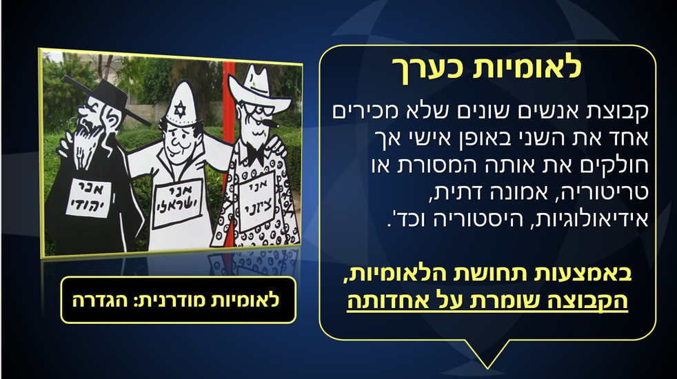- אנחנו: שימוש במיתוסים וסמלים לאומיים, התייחסות לנבחרת כהומוגנית וכמגלמת את אופי הלאום.
- הם: שימוש בסטריאוטיפים וייחוס מאפיינים שליליים.
עיתונות מגוייסת
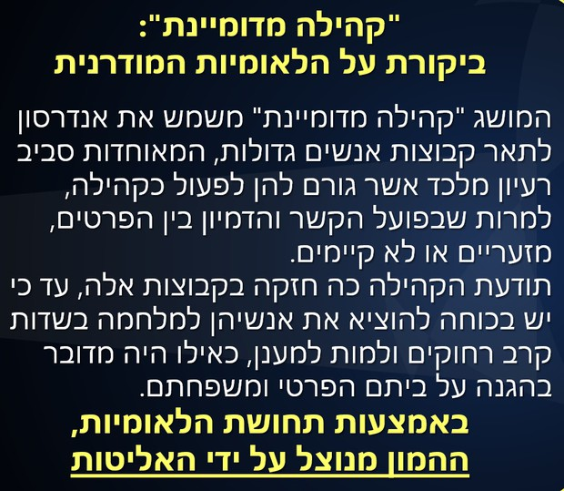שער הכותרת של ידיעות אחרונות: יום אחרי שירדן ג'רבי השיגה מדליית ארד באולימפיאדת ריו 2016. השער נצבע בכחול-לבן, אין אזכור של אף אירוע חדשותי אחר.
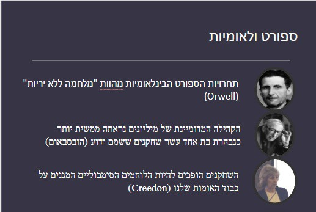שידור חי וזהות לאומית
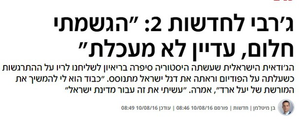אירועי הספורט מועברים בשידור חי להמונים. מכיוון שהם תחרותיים, הם משמשים במה למאבקים בין לאומים. אירועים כמו המונדיאל או האולימפיאדה הם שידורים שבהם הלאומיות תופסת מקום מרכזי.
התייחסות להיסטוריה הלאומית
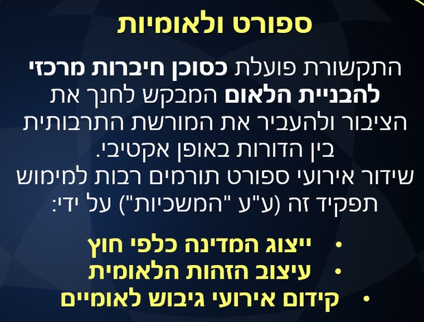"על אותה במת גבהים יתייצבו גם עושי ההיסטוריה הישראלית... כדורגלנים חובבים שבאו ממדינה הנאנקת ונאבקת על חייה...". (חדשות הספורט 1970).
דוגמה נוספת: משחק נגד פולין ב-1959 תואר כ"פוגרום שבוצע נגד הנבחרת שלנו על האדמה שהיא שבעת פוגרומים".
סאטירה: אנחנו במפה
על אדמת פולין - נבחרת ישראל ("אנחנו במפה")
מערכון המציג את השימוש המוגזם ברטוריקה לאומית בספורט.
צפייה ב-YouTubeשימוש במטאפורות מלחמתיות
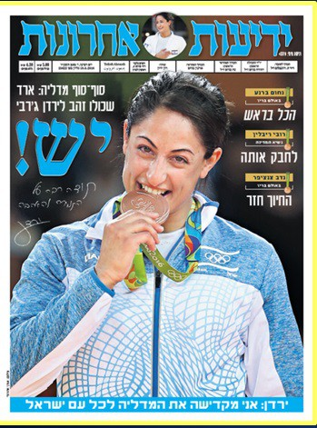השימוש במושגים כמו "קרב", "מלחמה", "הגנה", "התקפה", "לכבוש את היעד" בתיאור משחקי ספורט.
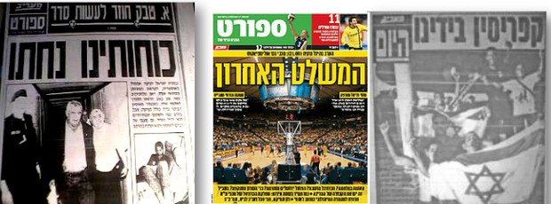ספורט כמעודד אינטגרציה או מחאה?
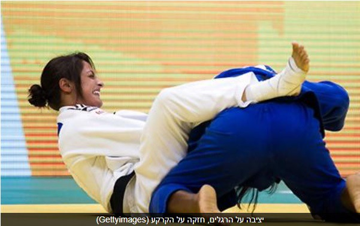אינטגרציה: הנבחרת הלאומית מסייעת לדמיין את הקהילה כ"כולנו ישראלים", ומעצימה תחושת שייכות תוך התעלמות מהבדלים.
מחאה: הספורט משמש כזרז למחאה חברתית ופוליטית. לדוגמה: שחקני קבוצות בספרד (קטלוניה/הבאסקים) שמסרבים לשיר את ההמנון או שורקים בוז למלך.
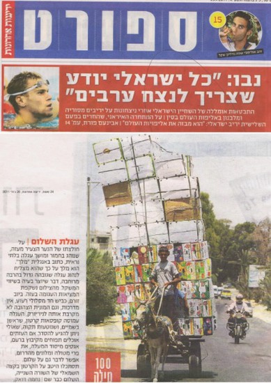 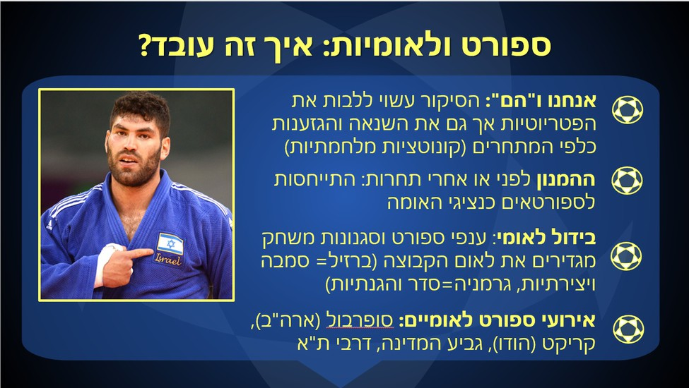מחאות ספורטאים בעולם

מייגן ראפיינו, קפטן נבחרת ארה"ב, מסרבת לשיר את ההמנון לאות מחאה. קולין קפרניק (פוטבול) כורע ברך בזמן ההמנון כמחאה נגד גזענות ואלימות משטרתית.
שידורי ספורט וכסף
מסחור הספורט
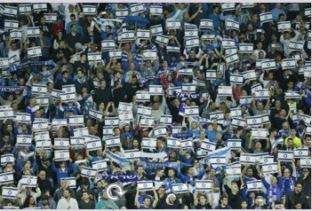סוכן ספורט - התפקיד והמשמעות הכלכלית.
הצד האפל של התהילה
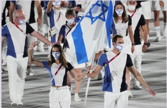זכיות ותהילה מרימים וממליכים מלכים, אבל יש גם את הצד האפל: הפגיעות הנפשיות והלחצים הכבדים. דוגמה: סימון ביילס פורשת מאולימפיאדת טוקיו בשל לחץ נפשי.
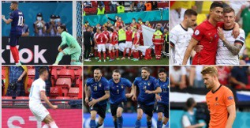עלות האולימפיאדה
מדינות מתחרות על האירוח בשאיפה ליוקרה והכנסות, אך לעיתים המאזן הכלכלי מתברר כשלילי (למשל יוון 2004). בנוסף, יש היבטים פוליטיים ומוסריים כמו באולימפיאדת בייג'ינג 2008 (זכויות אדם).
 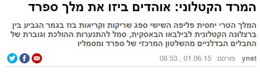
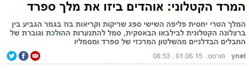
למה אנחנו צופים בספורט?
הסיבות לצפייה
הסיבות לצפייה בשידורי ספורט דומות לסיבות לצפייה בטלוויזיה בכלל (גישת השימושים והסיפוקים).
סיבות חברתיות
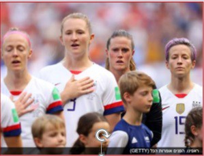הספורט מקדם ערכים של לאומיות ונאמנות לקבוצה. צפייה משותפת היא פעילות חברתית. לפי ד"ר יאיר גלילי, גורמים לאהדה כוללים: משפחה (ירושה), תקשורת, אירוע אפיזודי, וקבוצת השייכות (שבטית/גיאוגרפית).
סיבות בידוריות ורגשיות
מתח, קונפליקטים, גיבורים. ניצחון הקבוצה מחזק את האגו ("ניצחנו!").
רגעים מרגשים בכדורגל שיגרמו לכם לבכות!
צפייה ב-YouTubeסיבות שכליות
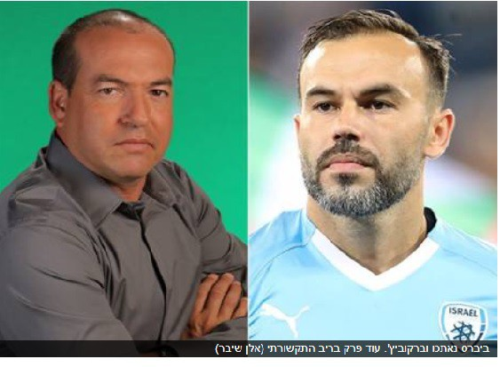הידע בהיסטוריה של הקבוצה, סטטיסטיקות ושיטות משחק מהווה אתגר אינטלקטואלי.
להיות אוהד הפועל...
להיות אוהד זה כמו רכבת הרים בלי רתמה. זה להאמין בנאחס, ללבוש חולצת מזל בקיץ, ולדעת שהילדים שלך זכו באליפות לפניך.
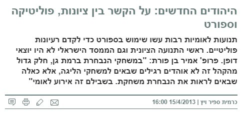